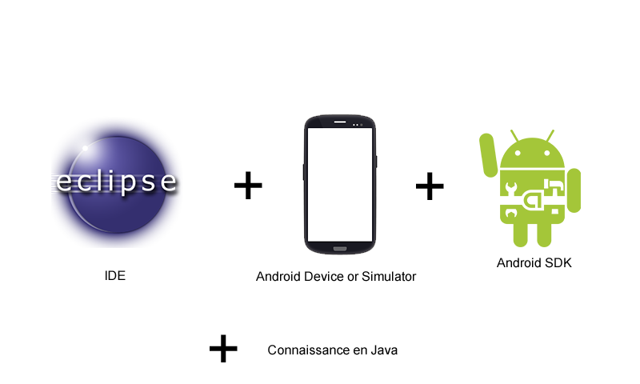
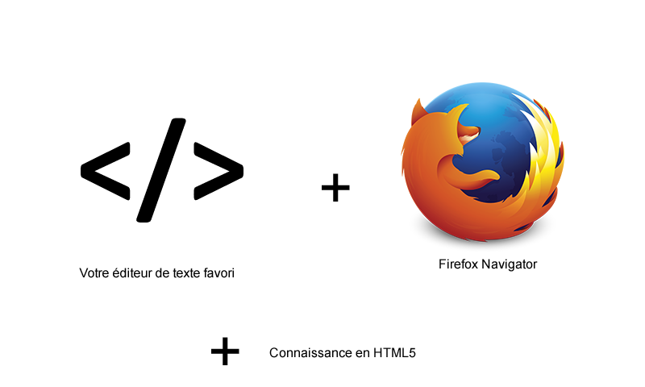

Firefox OS Project
C'est quoi ?
Un système d'exploitation open source développé par Mozilla pour les smartphones ( +tablettes ) basé sur les nouvelles technologies du Web
Pourquoi ?
- 100% Open Source
- GRATOS
- Basé sur les principes de l'OpenWeb
- Basé sur les nouvelles technologies du Web ( HTML5, CSS3, Javascript, .. )
- Facile à hacker*
[*]:hacker=développer
Quoi de spécial ?
Faisons une comparaison
What you need
for an iOS App

What you need
for an Android App

What you need
for a FirefoxOS App

This is awesome right ?!
Nos buts
- Promouvoir FirefoxOS à l'ISI
- Initier les étudiants aux technologies du Web
- Construire une équipe
- Préparer une documentation
- Fournir les outils nécessaires à tout le monde
- Une application par membre